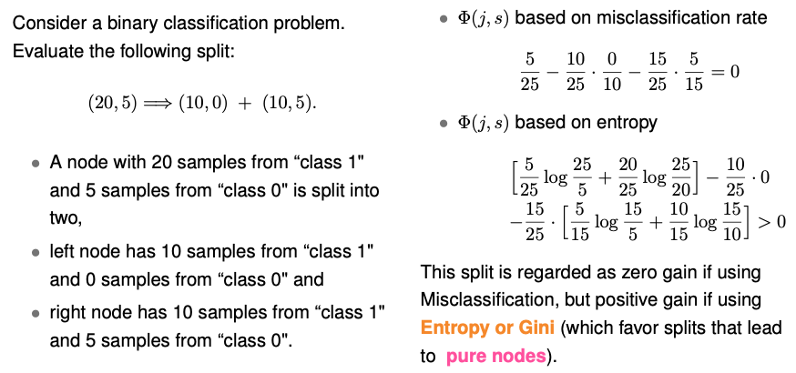
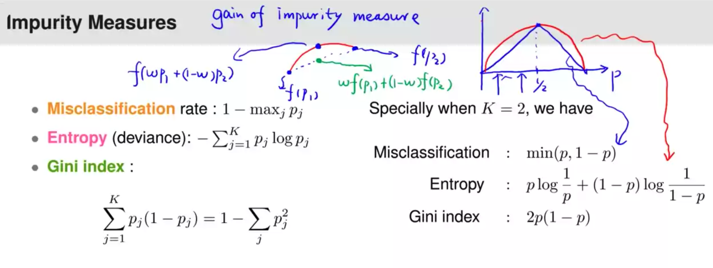

12.3. Misclassification Rate vs. Entropy
Now, let’s delve into the mathematical distinctions between the misclassification rate and entropy, two commonly used impurity measures in classification trees.
To illustrate these differences, let’s consider a hypothetical scenario where we partition a set of n observations within a node t into two child nodes: left and right, containing n_L and n_R observations, respectively.
For simplicity, we’ll assume there are only two classes. In the case of two classes, the impurity measure can be expressed as a function of the percentage of samples in one class. Let’s denote the percentage of class zero as \(p_t\) at a node t. This impurity function is essentially a function of \(p_t\). The gain of the impurity measure is then determined by the difference in impurity at node t (without a split) and the weighted sum of impurities in the left and right nodes. The weights are proportional to the sample sizes in the respective nodes.
Importantly, we observe that the percentage of class zero at the parent node t is equal to the weighted sum of the percentage of class one in the two child nodes. This equality arises due to the weights being determined by the sample sizes in each node.
The goodness of split \(\Phi(j,s)\) can be represented as the discrepancy between the function evaluated at a weighted sum of \(p_{t_R}\) and \(p_{t_L}\), and the weighted sum of the function evaluated at \(p_{t_R}\) and \(p_{t_L}\).
Crucially, the gain in the impurity measure will be positive if the function f is strictly concave. This property ensures that the difference between impurity measures at the parent node and the child nodes is always positive when evaluating the gain.
Let’s consider the following example:
{kind=link}
To illustrate this concept visually, consider the plot below. It shows the misclassification rate and entropy as functions of p, representing the percentage of one class. The misclassification rate (blue curve) is piecewise linear, while entropy (red curve) is strictly concave. The scaling is adjusted to ensure that both the entropy and the misclassification rate have the same value at p = 0.5.
{kind=link}
As mentioned earlier, when calculating the gain in the impurity measure, we compare the impurity measures at the parent node (blue dot) and the child nodes (green dot) as represented by the red and blue curves. If the underlying function is strictly concave (as in the case of entropy), the difference is always positive.
However, if both p1 and p2 fall on the same side of 0.5 (for instance, both on the left side), using the misclassification rate results in a zero gain because there is no additional benefit gained from the split. Conversely, entropy (and Gini index) consistently yield positive gains, encouraging the creation of pure nodes.
In summary, when constructing the tree, it is advisable to use either entropy or the Gini index as impurity measures because they are strictly concave functions. They encourage the creation of pure nodes. However, during the pruning phase, you have the flexibility to use the misclassification rate or any other impurity measure that suits your specific goals.